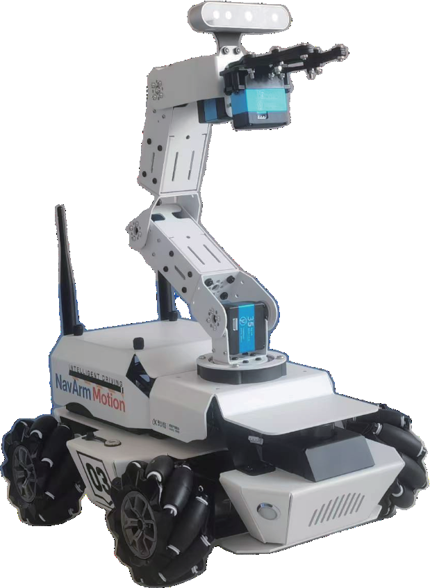

智慧泊车与综合路测
收口实验：先让小车"看懂车位"（标线四点检测 + 可用性判定），再"一把倒进去"（两段圆弧几何轨迹或 Nav2 精点导航），最后跑全流程综合任务——巡游 → 按标志改道 → 红灯停等 → 斑马线礼让 → 寻位泊车 → 语音播报成绩，形成一张可量化的验收评分表。
01本节目标
- 完成车位标线检测：下视/前视 ROI 中提取车位四角点，区分平行车位与垂直（直角）车位模型。
- 完成可用性判定：净空高度/占据色块 + 几何余量双判据，输出 occupied / free。
- 完成入库执行：任选其一——几何两段圆弧轨迹（可控、可解释）或 Nav2
/navigate_to_pose精点导航（复用建图成果）。 - 串联全流程综合任务六阶段，全部由
/traffic/*、巡线、泊车三个已验证模块驱动，中途零人工干预。 - 接入 car1_speech：任务结束 ASR 起评、TTS 播报总分，形成闭环反馈。
- 牢记两句话：入库先留侧隙（≥2cm）再回正；全流程跑前必设初始位姿、必用低速起步。
02核心原理：认车位 → 判空位 → 算轨迹——泊车三连
第一步"认车位"：相机 ROI 里只有白色标线，车位 = 三条边组成的开口矩形（平行车位沿路缘、垂直车位垂直路缘）。对预处理后的二值图做轮廓提取与多边形逼近，拿到四角点后与两种模板匹配：长宽比 ≈ 45:35 判平行车位、短边朝路判垂直车位。第二步"判空位"：标线在 ≠ 有位可用——用深度图/色块占据检测算净空：车位框内障碍高度 < 阈值且角点完整，才发布 available=true；被占用则跳过继续巡游。第三步"算轨迹"：平行车位用两段圆弧入库——45° 切入角起手，R1、R2 两段相切圆弧加一次回正，全程曲率连续；车长固定的 C1 若车位长 ≥ 车长 + 15cm 即可一把进。垂直车位更简单：外摆拉开横向间距 → 90° 切弧直入。
两种执行器二选一：几何轨迹按时间开环发 /cmd_vel，路径完全可预测、便于逐段录像复盘；Nav2 精点导航把终点位姿发给 /navigate_to_pose，AMCL 负责把 map 下的目标点换算成车体动作——复用 EXP-01 的 slam_map，代价是要保证初始位姿已设置、定位误差 ≤5cm。教学建议：先几何轨迹过"能进"，再换 Nav2 过"停得正"。
03硬件与场景

| 练习科目 | 通过标准 | 常见失败 |
|---|---|---|
| 平行车位检出 | 三种光照下检出率 ≥9/10，类型不误判 | ROI 盖太窄漏角点；反光处断线 |
| 可用性判定 | 有车/空位各 10 例全对 | 只看标线不看占据 → 撞"幽灵空位" |
| 几何轨迹入库 | 10/10 不压线，侧隙 ≥2cm，一次进 | 切入角过小蹭前车；速度过快甩尾 |
| Nav2 精点入库 | 停位偏差 ≤3cm、航向 ≤5°，3/3 成功 | AMCL 初值没设 → 目标点整体平移 |
| 全流程综合路测 | 6 阶段评分 ≥85 分，零人工干预 | 任一前序模块话题断流未接 fail-safe |
04操作步骤
ROI 标线提取 → 四角点 → 平行/垂直分类
占据高度 + 角点完整度 → free/occupied
两段圆弧（平行）/ 外摆切弧（垂直）
几何轨迹 或 Nav2 精点 → 侧隙校核回正
巡游→改道→红灯→礼让→泊车 计分
car1_speech 汇报总分与扣分项
- 车位感知标定：依次在三种光照下采集空位/有车各 5 帧，调二值化阈值与最小轮廓面积（太小=噪声标线，太大=车位+车道粘连），保存
slot_vision.yaml——光照变化重新标定是硬规矩。 - 可用性判定：发布
/parking/slot {type, corners[], available}；故意在车位放入障碍模型复测 10 例，"有车误判为空"按不通过处理。 - 几何入库：v ≤ 0.10m/s，R1/R2 按车长自动生成；每 10cm 记录一次横向间隙，低速起步、途中间隙 <2cm 立即停。
- Nav2 精点版：先 RViz2 设初始位姿（2D Pose Estimate）对齐地图，再发目标位姿入库——AMCL 误差直接进停位误差，初始位姿必设。
- 全流程联调：按图 4-3 检查点逐站通过后再连跑；任务节点订阅 /traffic/*、巡线偏差、泊车状态，统一计时计分，任一阶段超时 FAIL 并记扣分项。
- 播报与留痕：任务结束调 car1_speech TTS 播报（"任务完成，得分 95"）；录 rosbag + 评分表截图交作业。
05关键命令
车位/任务节点为本实验新增，其余沿用 xlsx 命令风格；评分表与话题契约见 s4。
# ① 起相机 + 车位检测节点（标线参数包 slot_vision.yaml） ros2 launch ascamera hp60c.launch.py python3 src/parking/perception.py --config config/slot_vision.yaml ros2 topic echo /parking/slot # type/corners/available # ② 目标位姿换算（map→车体变换，核对 TF 链） ros2 run tf2_ros tf2_echo map base_link ros2 run tf2_tools view_frames # out/frames.pdf 查 map→odom→base_link # ③-A 几何轨迹入库（两段圆弧，开环 /cmd_vel） ros2 run car1_parking arc_park_node.py --ros-args \ --params-file src/car1_parking/config/arc_park.yaml ros2 topic echo /parking/status # IDLE/PLANNING/DONE + 实时侧隙 # ③-B Nav2 精点入库（先在 RViz2 用 2D Pose Estimate 设初始位姿！） ros2 launch car1_navigation navigation.launch.py map:=slam_map ros2 action send_goal /navigate_to_pose nav2_msgs/action/NavigateToPose \ "{pose: {header: {frame_id: map}, pose: {position: {x: 3.42, y: -1.08}, orientation: {z: 0.0, w: 1.0}}}}" # ④ 全流程任务节点（六阶段计分）+ car1_speech 语音播报 ros2 launch car1_speech speech.launch.py ros2 run car1_mission route_mission.py --ros-args -p mode:=full ros2 topic pub --once /speech/tts std_msgs/String "{data: '任务完成，总分95，泊车满分'}" ros2 bag record -a -o smart_route_bag # 全程留痕回放复盘
06原理动画：两段圆弧入库与全流程时序
07互动实验：泊车轨迹拖拽仿真 + 六阶段评分器
玩法：① 切入角拉到 25° → 弧太缓，车尾压路缘线判 FAIL；拉到 70° → 急切，中段侧隙 <2cm；45° 附近一把进。② 起始点太靠前（y0 小于 180）→ 没有足够摆正距离。③ 可用性切到"占用" → 评分器应直接判 NO-GO，"有位不进"才是正确行为。
08常见问题
09拓展阅读
- 《自动泊车中的路径规划方法综述》：几何弧线法 vs 样条/搜索法的取舍——本课两段弧是工程教学的最小完备解。
- Nav2 costmap 与精点停位：inflation 层半径设大会让目标点"停不进去"，调小又擦线——对照 s5 的 3cm 判据理解权衡。
- ROS 2 QoS 与任务编排：里程碑评分器本质是 topics 编排（BPMN/状态机之辩），可对照 EXP-03 的优先级 FSM 看分层。
- 失败注入测试：主动拔话题、遮相机、放障碍——可靠课程系统靠 fail-safe 而不是靠运气。
- 上下文：EXP-01 语义标注提供车位地图点位，EXP-03 状态机提供 P1~P4 执行器——本实验只做编排与收口。